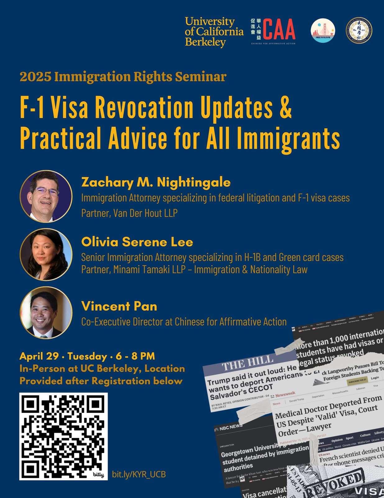
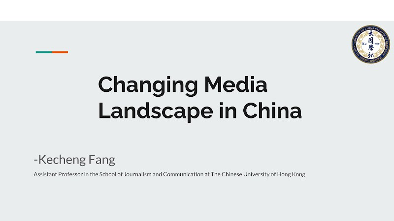
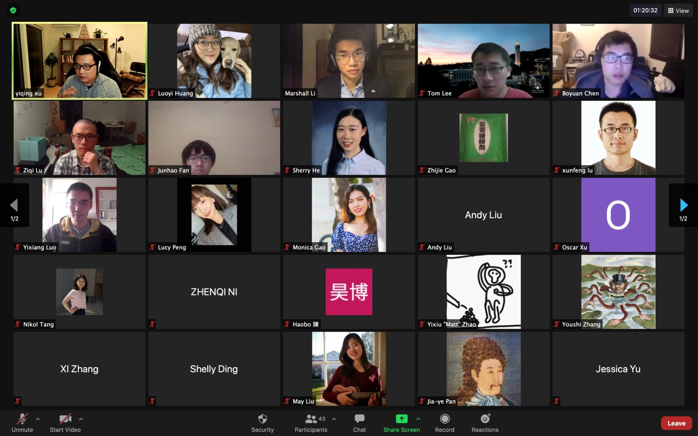

公共活动
围绕中国与东亚的讲座、放映、展览与公共交流。
按年份或类型浏览活动，展开条目阅读详情与查看档案影像。
近期活动
唐人街与 CHSA 参访
旧金山唐人街
与 CHSA 一同探索华人移民历史，活动包括唐人街街区步行导览，或由讲解员带领参观李小龙主题展览。
东亚文化沙龙
ASUC Senate Chambers，Eshleman Hall · UC Berkeley
沙龙将包括学生主讲的分享与展台活动，汇聚来自不同学术与文化背景的本科生和研究生。
往期活动
19 场活动
暂无符合筛选条件的活动。
2026

与 Laura Wen-yu Young 对谈
大同学社 · 东亚图书馆
大同学社与东亚图书馆共同举办 Laura Wen-yu Young（Wang and Wang, LLP）对谈，活动包含嘉宾分享与开放讨论。
展开详情与图片
活动与档案影像


KŪKAI 空海 — 放映与对谈
大同学社 · 东亚图书馆
纪录片讲述空海自日本赴唐的旅程，并与导演岳野在线对谈。由 C. V. Starr 东亚图书馆、大同学社与 Deep Value 合办。文言旁白，英文字幕，片长 97 分钟。
展开详情与图片
活动与档案影像


2025

移民权益讲座
Zachary M. Nightingale · Olivia Serene Lee · Vincent Pan
围绕 F-1 签证撤销及移民社群面临的实际问题，活动预告安排了移民律师讲解、社群资源介绍与现场问答。
展开详情与图片

与林培瑞对谈
林培瑞与大同学社围绕极权、人性与对策展开分享和讨论。
展开详情
同学与社友借此与林培瑞交流、提问。
2024
与江雪、李思磐对谈
与媒体人江雪、李思磐线上对谈，讨论新闻工作、职业身份转变及社会变迁中的个人选择。
展开详情
活动预告围绕从市场化媒体记者、编辑走向独立媒体人、女权主义者及社会研究者的经历，讨论个人选择与时代背景之间的关系。

与严歌苓面对面：《米拉蒂》新书分享会
嘉宾：严歌苓
严歌苓来到伯克利，与同学及湾区中文读者分享新作《米拉蒂》，并在问答与签售中继续交流。
展开详情与图片
《米拉蒂》以八十年代的文化与思想变动为背景，书写一位年轻女性从文工团舞者走向独立写作的经历。分享围绕小说中的人物与时代展开，也介绍了严歌苓在海外创作、出版这部作品的过程。
活动分为作家分享、观众问答与新书签售三个环节，以普通话进行，由大同学社组织，为校园与湾区读者提供了与作者面对面交流的机会。
活动与档案影像


与学者吴国光漫谈
大同学社与学者吴国光漫谈，为同学提供提问与交流的空间。
展开详情
活动以嘉宾与参与者之间的开放交流为主要形式。
2023
秦晖：从流脑大疫到“合作医疗”
历史学者秦晖以“从流脑大疫到‘合作医疗’：文革时期的中国农村卫生事业”为题，讨论这一时期的农村公共卫生。
展开详情
讲座以普通话为主，围绕农村医疗卫生的历史展开。

《钢的琴》：电影展映与学者讨论
嘉宾：Kevin O’Brien（欧博文）、林溪瀛（Lillian）
从张猛导演的《钢的琴》出发，讨论东北的工业转型、下岗工人的生活，以及个体如何面对时代变动。
展开详情
影片以上世纪九十年代下岗潮中的东北为背景，讲述原钢厂工人陈桂林为女儿制作钢琴的故事。亲情、友谊与旧工厂交织在一起，呈现工人生活在经济与社会转型中的变化。
映后讨论邀请伯克利政治学者欧博文与历史系博士生林溪瀛参加。两位嘉宾都与东北有着个人或任教经历上的联系，围绕影片及其所处的社会背景与观众交流。影片为中文、英文字幕，映后讨论使用英语。
2023 短片展映 · 大同 × IMFF
大同学社与 In Moments Film Festival（IMFF）联合推出三部短片的展映活动。
展开详情
公布片目包括秦飞凯的《越南公婆上巴黎》、胡英海的《沙巢》及李家和的《地儿》。

在美华人诉美国总统：朱可亮谈微信诉讼
嘉宾：朱可亮律师
朱可亮律师分享美国微信用户挑战2020年微信禁令的来龙去脉、诉讼策略，以及这一案件对华人社群维权的启示。
展开详情与图片
朱可亮结合参与诉讼的经历，介绍案件如何发起、推进，以及律师团队采取的法律策略。讲座从一个具体案件延伸至法律行动与公共参与，讨论华人社群如何通过司法途径维护自身权益。
本场活动是大同中文讲座系列的一部分，以普通话进行，包含嘉宾分享与观众问答。学生与社区观众在现场交流，共同讨论法律行动与公共参与。
活动与档案影像


《三峡好人》：与何伟、Andrew F. Jones 映后交流
何伟（线上）· Andrew F. Jones（现场）
贾樟柯的《三峡好人》将校园与湾区观众聚在一起，放映后与作家何伟、伯克利学者 Andrew F. Jones 交流。
展开详情与图片
《三峡好人》以三峡地区的变迁为背景，跟随寻找亲人的人物，呈现拆迁与重建中的日常生活。大同通过放映和映后对谈，为观众提供从影像与写作经验思考这些变化的空间。
何伟通过 Zoom 参加映后讨论，Andrew F. Jones 在现场交流。组织者李沛航在次日的感谢邮件中记录，活动吸引了来自湾区的160余位观众，团队还准备向何伟寄送全体签名的感谢卡。
学社早期档案还记录了2015年对这部影片的一次放映。
活动与档案影像


2021

《中国市长》：纪录片放映与圆桌讨论
Jean Quan（关丽珍）· Thomas Gold（高棣民）· 主持：Junius Brown
从纪录片《中国市长》出发，讨论城市重建、地方治理，以及公民与政府之间的关系。
展开详情与图片
周浩执导的纪录片记录山西大同的城市改造及其引发的矛盾。大同学社将影片与公共服务、中国政治及社会研究的视角联系起来，邀请嘉宾与观众展开讨论。
原活动流程列出前奥克兰市长关丽珍、伯克利社会学者高棣民参加圆桌，Junius Brown 主持讨论，Luxi负责开场与现场主持。放映后安排圆桌及观众问答。原主持稿还向 Andrew F. Jones、Annie Campbell Washington 与何老师致谢。
学社早期档案还记录了2015年对这部影片的一次放映。
活动与档案影像

《76天》：纪录片展映与讨论
放映纪录片《76天》，通过武汉医院中患者与医护人员的故事，回看疫情初期的生活与情感。
展开详情
活动预告邀请当时的伯克利政治学博士候选人 Junius Brown，与观众共同参与映后讨论。

方可成：中国媒体格局的变迁
方可成参与大同学社线上活动，分享中国媒体格局的变迁，并与观众问答。
展开详情与图片

2020

变局中的中国留学生 · 徐轶青
徐轶青参与“变局中的中国留学生”线上活动，与同学分享并进行问答。
展开详情
活动结合嘉宾分享、观众提问与讨论。
2019

韩国淑明女子大学汉字刺绣枕顶展Modern Chinese Embroidery on Pillow Covers
与淑明女子大学博物馆联合办展——近代中国刺绣枕顶首次公开展出。配套展品清单、志愿者排班、借展协议与讲座海报均由大同学社独立执行，是社团史上规模最大的对外活动。
展开详情与图片
活动与档案影像


2017

Hoover Institution 档案馆参访Stanford Hoover Institution — Archive Visit
走进斯坦福胡佛研究所，近距离观看民国时期与现代中国的珍贵档案原件。
展开详情与图片
活动与档案影像


2016

"Let's Talk About Social Science"跨学科沙龙 — 历史、社会学、政治学的对话
15 位同学围绕"什么是好的社科研究"展开 90 分钟讲读与提问，奠定大同学社小型沙龙的传统。
展开详情与图片
活动与档案影像


另可浏览社群影像与DeCal 课程档案。